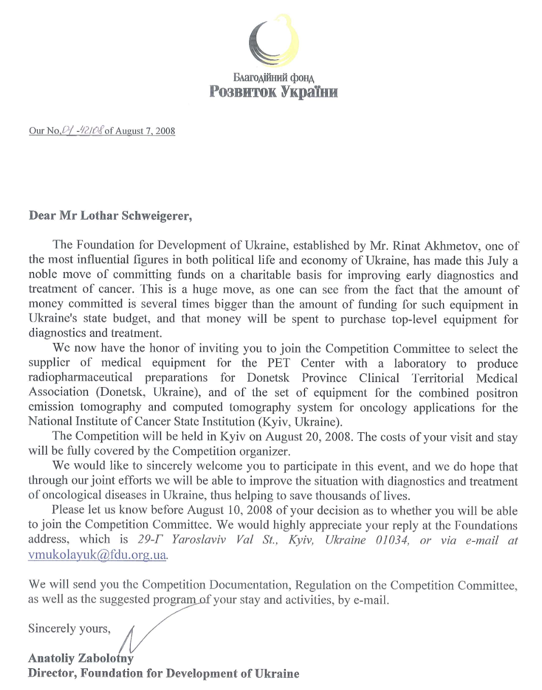

Das Bundesgesundheitsministerium hatte mich vor meiner ersten Reise in die Ukraine gewarnt.
„Sie müssen wissen", sagte mir Jürgen Schierbaum, „Korruption spielt dort im Gesundheitswesen eine große Rolle.“ Ich nahm diesen Hinweis zur Kenntnis, hielt ihn aber zunächst für eine der üblichen diplomatischen Vorsichtsmaßnahmen. Schließlich ging es um den Aufbau einer besseren Versorgung krebskranker Kinder. Ich konnte mir nur schwer vorstellen, dass dabei wirtschaftliche oder politische Interessen eine größere Rolle spielen würden als medizinische Argumente.
Schon bei meinem ersten Aufenthalt im Rahmen des Projekts „Ukraine 3000" stieß ich auf Verfahren, die mich irritierten. Die Auswahl der radiologischen Ausstattung für die geplante nationale Kinderklinik wurde mit großem organisatorischem Aufwand durchgeführt. Vertreter verschiedener Firmen präsentierten ihre Geräte, anschließend wurde geheim abgestimmt. Die Stimmzettel wanderten in eine gläserne Wahlurne und wurden öffentlich ausgezählt. Auf den ersten Blick wirkte das ausgesprochen demokratisch. Im Westen hätte ein Klinikgeschäftsführer nach Beratung durch seine Fachleute die Entscheidung getroffen. Hier entstand der Eindruck, dass jedes Detail möglichst transparent gestaltet werden sollte. Damals verstand ich noch nicht, warum.
Einige Monate später erhielt ich eine Einladung der Stiftung des Oligarchen Rinat Achmetow. Am 19. August 2008 sollte ich als Vorsitzender einer internationalen Expertenkommission an der Auswahl von Bestrahlungsgeräten für Kliniken in Kiew und Donezk mitwirken. Ich fühlte mich geehrt. Endlich, dachte ich, ein Auswahlverfahren, bei dem ausschließlich medizinische Kriterien im Mittelpunkt stehen würden. Doch schon nach kurzer Zeit bekam das Ganze merkwürdige Risse. Von vier Firmen, die ursprünglich eingeladen worden waren, erschienen nur zwei. Noch erstaunlicher war, dass beide Firmen jeweils nur ein einziges Angebot abgegeben hatten – die eine ausschließlich für Kiew, die andere ausschließlich für Donezk. Es gab also überhaupt keinen Wettbewerb mehr. Niemand konkurrierte mit niemandem.

Je länger die Sitzung dauerte, desto stärker entstand bei mir der Eindruck, dass die Entscheidungen längst gefallen waren. Die Expertenkommission sollte sie lediglich mit wissenschaftlicher Autorität begleiten. Plötzlich verstand ich, weshalb ich überhaupt eingeladen worden war. Nicht, weil man meine Meinung hören wollte, sondern weil ein deutscher Professor im Protokoll gut aussah. Ich war das Feigenblatt.
Damit konnte und wollte ich nicht leben. Ich verlangte deshalb, dass ausdrücklich im Protokoll festgehalten wurde, dass ich mit diesem Verfahren nicht einverstanden war. Anschließend reiste ich vorzeitig ab. Meine Auslagen wurden – wie schon bei früheren Besuchen – in bar erstattet.
Auch bei unserem eigenen Austauschprogramm begegneten wir später ähnlichen Problemen. Gemeinsam mit Prof. Josef Zacher, dem ärztlichen Direktor unseres Klinikums, wollte ich die Teilnehmer selbst auswählen. Wir hatten vereinbart, dass ausschließlich Kinderärzte und Kinderkrankenschwestern nach Berlin kommen sollten. Als uns schließlich die Vorschlagslisten vorgelegt wurden, standen dort plötzlich Ärzte ganz anderer Fachrichtungen.
Ich diskutierte lange mit Martina Krüger von „Ein Herz für Kinder“ darüber. Natürlich waren auch diese Kolleginnen und Kollegen engagierte Mediziner. Aber sie entsprachen nicht dem Konzept, das wir gemeinsam entwickelt hatten. Letztlich akzeptierten wir einige Kompromisse, weil wir das eigentliche Ziel nicht aus den Augen verlieren wollten: die medizinische Versorgung der Patienten zu verbessern. Dennoch blieb bei mir ein ungutes Gefühl. Immer wieder hatte ich den Eindruck, dass gute Ideen an Strukturen scheiterten, die von außen kaum zu durchschauen waren.
Jahre später wurde dieses Gefühl auf traurige Weise bestätigt. Die große nationale Kinderklinik, deren Planung ich 2008 noch als Gutachter begleitet hatte, wurde niemals gebaut. Das Projekt „Ukraine 3000" verschwand. Mit ihm verschwanden auch die Spendengelder, die für dieses Krankenhaus gesammelt worden waren.
Nach Abschluss unseres Austauschprogramms entschied ich deshalb, mich in dieser Form nicht weiter in der Ukraine zu engagieren. Nicht weil ich das Land aufgegeben hatte. Im Gegenteil. Ich hatte viele wunderbare Menschen kennengelernt – engagierte Ärzte, junge Mitarbeiter von Stiftungen und Menschen, die ihr Land ehrlich voranbringen wollten. Aber ich war zu der Überzeugung gekommen, dass internationale Hilfe nur dann dauerhaft etwas bewirken kann, wenn ein Staat selbst bereit ist, die Voraussetzungen dafür zu schaffen. Solange Korruption zum Alltag gehört, stoßen selbst die besten Projekte irgendwann an ihre Grenzen.
Diese Erkenntnis war ernüchternd. Sie änderte jedoch nichts an meiner Hochachtung vor den Menschen, die trotz all dieser Schwierigkeiten jeden Tag versuchten, ihr Land ein Stück besser zu machen.